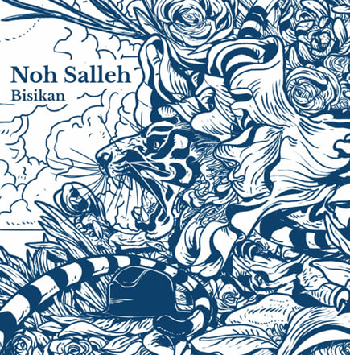

Hi, my name is Alia Rahmatunnisa binti Mohd Rosly, but you can call me Aya. I’m from KCDIM1105C. I am a curious and passionate individual with a love for exploring different fields, continuously learning new skills, and embracing challenges. My interests span across design, writing, and project organization, areas in which I strive to grow and bring meaningful value to every role I take on. I approach my work with creativity, a strong sense of responsibility, and a commitment to quality. I’m always eager to contribute my skills, insights, and unique perspective to collaborative projects, as I believe that teamwork enriches both the process and the outcomes. I’m excited to apply my abilities in new environments, where I can both learn from others and share what I know, making a positive impact through dedication and innovation.
To provide some context, I'm currently in my final semester of studies at UiTM Kedah, Merbok. Reflecting on it, I realize I've already spent two and a half years here, focusing on information management. Interestingly, this wasn’t my intended path—I hadn’t originally planned to pursue this course. Due to a small mistake in my UPU form submission, where I accidentally placed information management as my first choice, I was ultimately assigned to it. So, although it wasn't my top choice, I’ve embraced the journey and am making the most of the opportunity to learn in this field.
At university, my friends know me as Aya. I became active as a theater actor at the start of the semester, and my first acting experience was in the production “Malam Kesucian Jiwa”. This was my earliest experience on stage, and it’s one I’ll never forget—perhaps because it marked the beginning of my journey in theater, something I’d dreamed of since childhood. After that, I gathered the courage to participate in programs organized by MPP and JPK. This turned out to be one of the best experiences I’ve had, as it gave me the opportunity to see firsthand how both committees operate and collaborate. Now, as I enter my final semester, I’m stepping back from the busy schedule of programs and theater performances. I feel that it’s time for me to unwind and enjoy a more relaxed pace. I want to create lasting memories with my friends before we all go our separate ways. This period feels like a meaningful pause, allowing me to reflect on the journey I’ve had so far and appreciate these final moments of university life.
For me, I really enjoy writing—whether it's poetry, journaling, or keeping a diary. Writing is one of the ways I calm myself down and reflect on my thoughts and experiences. It helps me process things and remember important moments. In addition to writing, I also love listening to music. I don’t have a specific playlist, nor do I curate one for myself, because I enjoy listening to all kinds of songs, no matter the language or genre. However, one of my favorite EP is “BIsikan” by Noh Salleh, a talented Malaysian singer whose music resonates with me deeply.
Click here to listen to my favorite EP on Spotify.
Aside from music, I also have a passion for photography and videography. Whenever I’m feeling motivated, I take photos and record videos, and if I have the time and energy, I’ll edit and post them on Instagram. I find editing pictures and videos fun, though I mostly do it for myself. It's something I do when I feel bored or need a creative outlet. I also love watching dramas and movies in my free time. Similar to how I listen to any kind of music, I enjoy watching all genres of films and shows. It's something I do to relax, and I don't have a specific preference—if the story is engaging, I’m all in. Finally, I think I have a soft spot for singing, even though I know my voice isn’t exactly perfect or pleasant for everyone. Still, I love to sing, and I’ve had this passion since I was a child. It’s something I’ve always kept to myself, hidden away and only shared in private moments. But deep down, I’ve always found joy in it, even if I’m not the most skilled at it
For this, I can confidently say that I am truly myself. I am always the one who pushes myself forward, even in times of difficulty, pain, and exhaustion. When I feel overwhelmed to the point where I consider giving up, I am the one who reminds myself to keep going, to continue living. I remind myself that there are still many experiences I haven’t had, so many exciting things left to enjoy in life. I am also the one who works tirelessly for the things I want. I dedicate myself to achieving my goals, and many of the things I’ve worked hard for, I have successfully obtained. A quote that always reminds me of my perseverance is: “Be proud of how hard you are trying,” and I also remind myself to be proud of my younger self, because I am here today because of her strength. In addition, I am incredibly grateful to my parents. Their constant prayers for my success, both in this world and the hereafter, are what keep me grounded. Thanks to their prayers, I am still here today. It is through their love and support that I continue to exist, breathing and thriving. I must also express my gratitude to Kak Syitah and my other seven siblings. They have been unwavering in their support, always loving me wholeheartedly. Lastly, I am deeply thankful to my friends, especially Ain, Ainul, and Sha. They have helped me immensely, especially throughout my journey in completing my diploma. Their friendship and encouragement have been vital in keeping me motivated and determined to carry on.
This website is a platform where I can share my experiences, inspirations, and ideas with others. My goal is to create a space that not only reflects my journey but also offers something meaningful and enjoyable for every visitor. I hope that, as you explore these pages, you find content that resonates with you, sparks new thoughts, or simply brings a moment of enjoyment